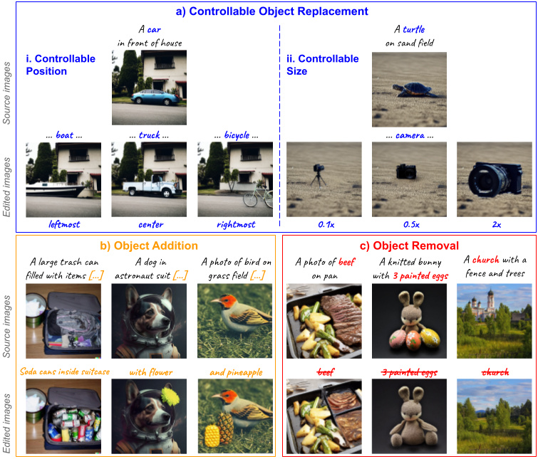

FlexEdit: Flexible and Controllable Diffusion-based Object-centric Image Editing

Our work addresses limitations seen in previous approaches for object-centric editing problems, such as unrealistic results due to shape discrepancies and limited control in object replacement or insertion. To this end, we introduce FlexEdit, a flexible and controllable editing framework for objects where we iteratively adjust latents at each denoising step using our FlexEdit block. Initially, we optimize latents at test time to align with specified object constraints. Then, our framework employs an adaptive mask, automatically extracted during denoising, to protect the background while seamlessly blending new content into the target image. We demonstrate the versatility of FlexEdit in various object editing tasks and curate an evaluation test suite with samples from both real and synthetic images, along with novel evaluation metrics designed for object-centric editing. We conduct extensive experiments on different editing scenarios, demonstrating the superiority of our editing framework over recent advanced text-guided image editing methods.
FlexEdit achieves object-centric image editing based on denoising diffusion process built upon the Stable Diffusion model. Specifically, we manipulate the noisy latents at each time step via two main components: an iterative test-time optimization via loss constraints, and a masking mechanism with adaptive mask. Initially, we design several constraints via loss function and iteratively optimize noisy latents at each time step to enforce editing semantic alignment. Subsequently, we apply a masking mechanism where we blend source and target noisy latent codes with an adaptive mask constructed using both static source object and dynamic target object mask.
Overview of FlexEdit framework. Given an input image I, we first bring it to the intermediate source latents through an inversion process. Subsequently, the de- noising process starts from \( z_T^* \) cloned from \( z_T \) after the inversion process and progresses toward \( z_0^* \) , which is then decoded to get the edited image \( I^* \). At each denoising step, our FlexEdit block manipulates the noisy latent code through two main submodules: latent optimization (shown in blue), and latent blending (shown in orange). This is to achieve editing semantics as well as to maintain high fidelity to the source image. If the iterative process (shown in green) is not executed, our FlexEdit would return \( z_t^* \).
@article{nguyen_etal2024flexedit,
title={FlexEdit: Flexible and Controllable Diffusion-based Object-centric Image Editing},
author={Tung Trong Nguyen, Anh Duc Nguyen, Anh Tran and Cuong Pham},
journal={arXiv preprint arXiv:2403.18605},
year={2024}
}